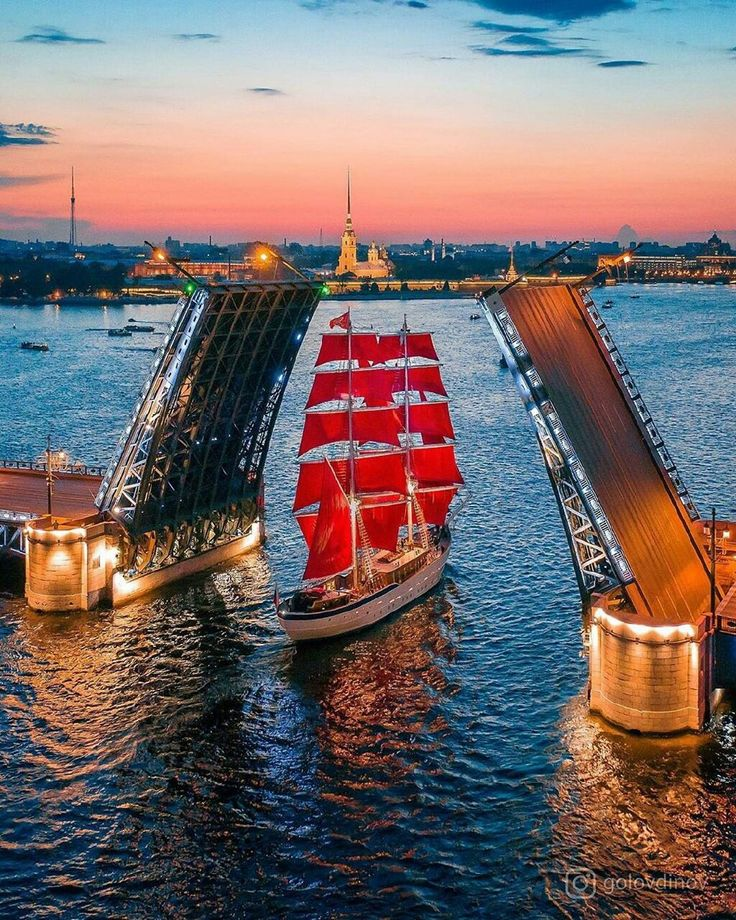

Санкт-Петербург богат достопримечательностями. На Дворцовой площади, где расположены Главный штаб и Александрийская колонна, возвышается Зимний дворец – часть музейного комплекса Эрмитаж, хранящего шедевры Да Винчи, Рафаэля, Рембрандта, Пикассо и других великих мастеров. Адмиралтейство с его золотым шпилем – еще один символ города. Величественные Исаакиевский и Казанский соборы поражают своей архитектурой и внутренним убранством. Уникальная Кунсткамера, основанная Петром I, представляет коллекцию анатомических редкостей. В Петропавловской крепости находятся Петропавловский собор с царскими усыпальницами и Музей истории Петербурга. За городом расположен Петергоф, "русский Версаль", с Китайским дворцом в стиле рококо. Современный облик города дополняет Лахта Центр – высочайшее здание Европы.
